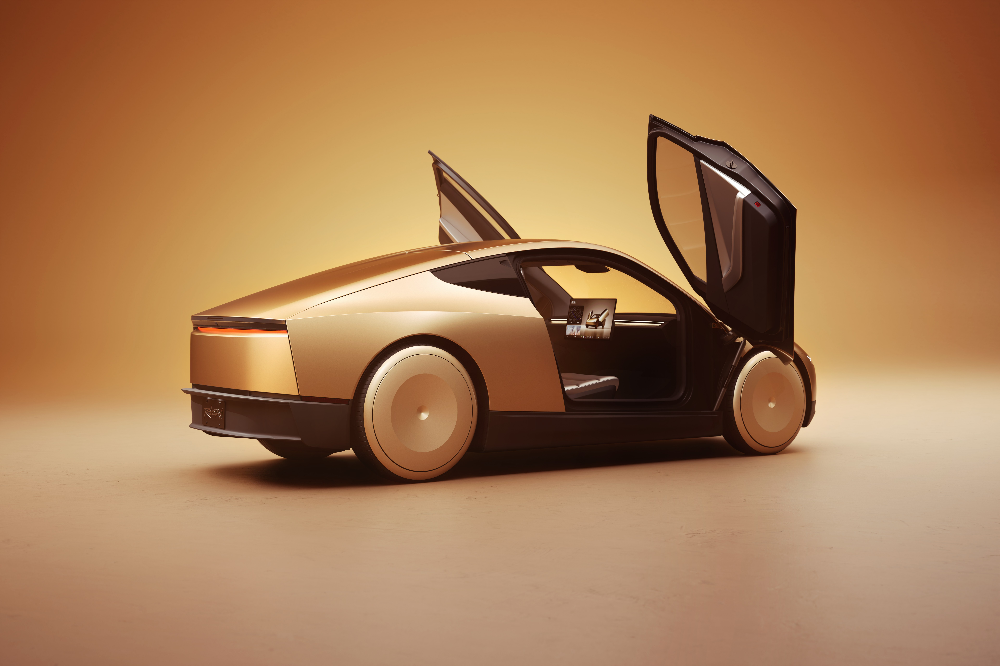

Tesla официально объявила (постом собственного аккаунта Robotaxi в X) об открытии заказов на Cybercab «для личного пользования». Цена — $29 990 до налогов, доставка — с декабря 2026 года в Остине (Техас), депозит $1 000 невозвратный. Главная деталь — в мелком шрифте: подписка «Autonomy Subscription» за $299 в месяц предустановлена и обязательна — «для эксплуатации требуются подписка и регулярное обслуживание». Без неё автомобиль за $30 тысяч просто не двигается.
Два места, сенсорный 21-дюймовый экран по центру, багажник 20,1 кубического фута (около 570 литров) — и никаких руля и педалей. Tesla называет её «полностью автономной»: управлять поездкой нужно через приложение. Илон Маск при анонсе в 2024 году обещал Cybercab «дешевле $30 000» — формально обещание выполнено, только вот $3 588 в год за подписку он не упоминал. За пять лет владения набежит примерно $47 600 — без страховки, обслуживания и зарядки.
Ездить Cybercab сможет только в зонах работы Robotaxi: восемь городов — Остин, Даллас, Хьюстон, Форт-Уэрт и Сан-Антонио в Техасе, Майами, Орландо и Тампа во Флориде. Независимый трекер Коуби Пирс проверил тысячи адресов и выяснил: реальные зоны посадки/высадки составляют лишь 59–78% от заявленных геозон, причём в самом Остине — около 59%. В Хьюстоне приложение строило 40-минутный маршрут на расстояние в два блока — машины объезжают железнодорожные переезды.
NHTSA (американское управление безопасности дорог) обязало Tesla под присягой доказать, что автомобиль без тормозной педали соответствует федеральным стандартам, которые эту педаль предусматривают. Tesla ответила 30 октября и попросила засекретить весь ответ; решения регулятора нет, а машину уже продают частникам.
По сути Tesla продаёт не автомобиль, а пропуск в свою автономную экосистему: покупатель владеет кузовом, но подпиской ежемесячно «покачивает» его к жизни — и только там, где позволено геозоной.